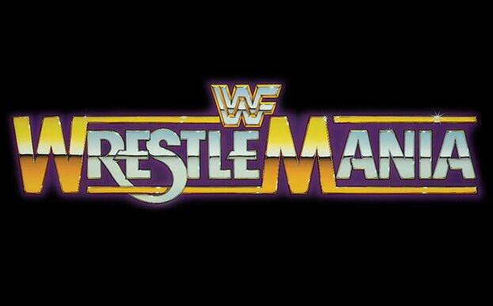
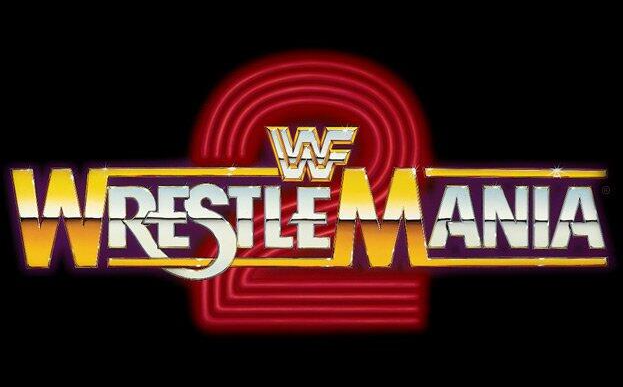
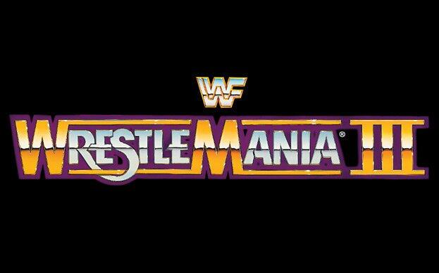
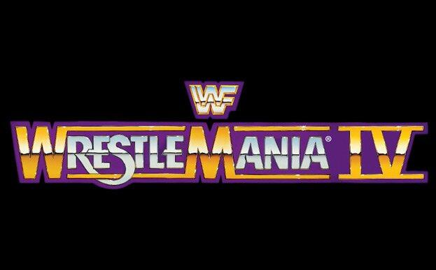
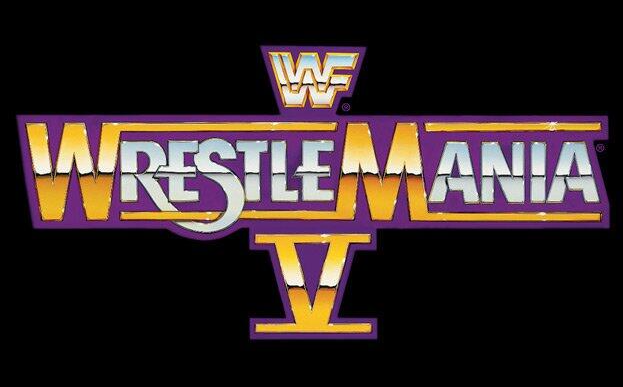

Wrestlemania 1

Wrestlemania 1 Facts
- The date & location for the first Wrestlemania was March 31, 1985 at Madison Square Garden in New York, New York
- The first title change was when The Iron Sheik & Nikolai Volkoff defeeated The U.S. Express to win the WWE Tag Team Championship
- There were multiple celebrities present at the event such as Cyndi Lauper, Muhammad Ali, Billy Martin, & many others were a part of or in attendance for the show
- The WWE World Title was not defended on the card as Hulk Hogan teamed up with Mr. T to take on & defeat the team of Paul Orndorff & Roddy Piper
- Originally, the event was not named Wrestlemania, it was supposed to be called "The Colassal Trade" until ring announcer Howard Finkel suggested they name the event Wrestlemania
- Former WWE Chairman Vince McMahon invested all of his life savings into this event & could've bankrupted the WWE if the event failed
- The event led to professional wrestling to get more popular than it already was & it led to the creation of another show named Saturday Night's Main Event on NBC
- The show only featured 9 matches & had only 3 championship matches booked
Wrestlemania 1 Statistics
- This Wrestlemania featured the company's flagship titles except the WWE World Championship being on the line
- Multiple competitors who were competing would end up making their WWE debut at the "Show of Shows"
- This Wrestlemania was the first of 4 Manias that WWE would have in New York
- Legendary ring announcer Howard Finkel would start his consecutive yearly of appearing at every single Wrestlemania that happened
- Wrestlemania 1 had the shortest amount of match time which was 1 hour, 1 minute, & 51 seconds
- This Wrestlemania was the first of many under the WWE/WWF banner of hosting their marquee event every year
Wrestlemania 2

Wrestlemania 2 Facts
- This Wrestlemania is the only one to take place on a Monday & it took place in 3 different venues in the same day
- This Wrestlemania would be the first & only to feature a professional boxing match between "Rowdy" Roddy Piper & Mr. T
- The venues where the event took place was at the Nassau Veterans Memorial Coliseum in Uniondale, New York, Rosemont Horizon in Rosemont, Illinois & Los Angeles Memorial Sports Arena In Los Angeles, California
- In the main event, Hulk Hogan would defeat King Kong Bundy in a steel cage match where the WWE Championship was first defended at Wrestlemania
- The event also featured the first Wrestlemania Battle Royal with Andre the Giant winning & the match featured multiple WWE superstars & NFL players/alumni
- The event also featured a steel cage match with the infamous big blue cage although that cage was know to hurt the wrestlers
Wrestlemania 2 Statistics
- The event featured 12 total matches across 3 arenas with 4 being held & it included 4 title matches
- The battle royal had 6 former/current NFL players at the time in the match
- The total match time was 82 minutes & 48 seconds with the longest match of the night which was a non wrestling match was a boxing match between Mr. T & "Rowdy" Roddy Piper
- The longest match of the night being a pro wrestling match was The British Bulldogs VS The Dream Team (Brutus Beefcake & Greg Valentine) for the WWE Tag Team Championships
- The money spent to get into the venue was $1.04 million in gate revenue
- The total money spent to watch the event at home was $4.86 million which averaged 360,000 viewers at home
Wrestlemania 3

Wrestlemania 3 Facts
- The event was held at the Pontiac Silverdome in Detroit, Michigan with a reported attendance of 93,173 spectators
- Andre the Giant reportedly never confirmed or denied to Hulk Hogan himself if he agreed to lose the match until right before the match was scheduled to take place
- Ricky "The Dragon" Steamboat & Randy Savage went over & rehearsed everything which was rare to do at the time & it led to around 20 near falls during the match
- Andre the Giant had his first singles match in WWE in over a year because of his health rapidly degrading in his back which led to him taking an extended break from WWE at the time
- Vince McMahon allegedly blacked out the event so that the WWe were able to sell tickets to fans so they can attend the event in person rather than buying it on TV
- Hulk Hogan bodyslammed Andre the Giant late in their match which had never been done before to win the WWE Championship in the main event
Wrestlemania 3 Statistics
- There was no tag team title match that took place during the event which was the first Wrestlemania to have that unusual stat
- Ricky Steamboat's victory over Randy Savage for the Intercontinental Title was the first ever title change for the specific championship
- Aside from the live audience, almost one million fans purchased the event across 160 closed-circuit locations across North America
- The attendance for the show held the world record for 12 whole years until Pope John paul II drew 104,000 people to the TWA Dome in 1999
- Andre the Giant drank about 14 bottles of wine prior to his championship match with Hulk Hogan because he had a bad alcoholic problem at the time
- Prior to her singing "America the Beautiful", Aretha Franklin had zero sound checks before she sang & since Vince McMahon blacked out the event nearby, it almost led Aretha Franklin to miss the event
Wrestlemania 4

Wrestlemania 4 Facts
- The WWE Championship was deemed vacant just days before the event which was the first time the WWE Title was vacant since 1962
- Wrestlemania 4 is the only Wrestlemania to have a 14-man tournament to determine the new WWE Champion that started & ended the same night with Randy Savge becoming the new champion
- This Wrestlemania had a total of 16 matches & had only 3 title matches happen on the show
- Randy Savage set the record for the most times competing in one night at Wrestlemania which was 4 times thanks to his partaking in the tournament
- There was only one time-limit draw which was between Jake "The Snake" Roberts & "Ravishing" Rick Rude which was the first & only wrestlemania match to end in a time-limit draw
- This was the first time at Wrestlemania where Hulk Hogan didn't make the main event as he was the 9th match of the night facing against Andre the Giant in a quarter-finals match to determine who would be the new WWE Champion
- Although "The Million Dollar man" Ted DiBiase lost in the finals to Randy Savage, the Million Dollar Championship was given to him in order to keep his rich man gimmick entact
Wrestlemania 4 Statistics
- The total match time was around 1 hour and 42 minutes wth the longest match of that time being Jake Roberts VS Rick Rude going to a 15-minute time-limit draw
- The total attendance for the show was 19,199 total spectators that packed the Alantic City Convention Hall
- the total gate revenue for the event was $1.5 Million & the estimated PPV buys were around 650,000 to 767,000 household buys
- "Macho Man" Randy Savage wrestled for almost 35 minutes across 4 matches he had that night
- This 14-man tournament caused the WWE Title to change hands the only time in a tournament form at Wrestlemania
- Although the event was promoted as being at the Trump Plaza, the event was actually held at the Atlantic City Convention Hall in New Jersey
- After Demolition won the WWE Tag Team Championships, they kicked off a 478-day title reign which was historic to do at the time
Wrestlemania 5

Wrestlemania 5 Facts
- The event was once again held at the Atlantic City Convention Hall for the second year in a row
- During the broadcast, the commentary team kept referring to the event being held at the Trump Plaza
- During his match, The Ultimate Warrior would suffer his first pinfall defeat in a WWE ring losing to Rick Rude to win the WWE Intercontinental Championship in the process
- Rival promotor Ted Turner almost ran a PPV the same day (WrestleWar) which would've been directly opposite of Wrestlemania & it forced Vince McMahon to take a pay cut to keep his audience watching his product
- During the show, Mr. Fuji would have his first & only Wrestlemania match as he would team up with the Powers of Pain to take on Demolition but lost nevertheless
- During the main event, Randy Savage's 371-day WWE World Heavyweight Championship reign came to end thanks to the hands of Hulk Hogan after the two had broken up prior to the show
Wrestlemania 5 Statistics
- The match card for the show featured 14 total matches but only 3 title matches happened during the show
- The show had an estimated match time of 104 minutes (1 hour & 44 minutes) which led to about 3 hours of interviews, entrances, & celebrity segments